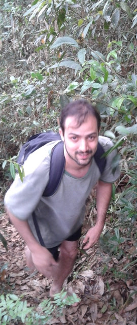

Olá, eu sou Bruno Brant
Meu nome é Bruno Brant, nasci em Belo Horizonte e tenho 29 anos.
No ensino médio fui convencido pelos meus pais a estudar em uma escola técnica e isso fez com que eu me formasse em 2002 pela Escola Técnica de Formação Gerencial do Sebrae-mg.
Em 2005 ingressei no curso de Biblioteconomia da UFMG, apesar de não ser "apaixonado" por bibliotecas e livros, como muitos me perguntam.
O verdadeiro motivo pelo qual me interessei pela biblioteconomia (que ao mesmo tempo é mãe e filha da ciência da informação)1 foi por ser apaixonado pela internet e pelas possibilidades que ela cria.
Durante a faculdade fiz alguns estágios e o que considero mais importante na minha "carreira" foi o que fiz no Instituto Inovação (II). Naquela época a web 2.0 estava começando a se consolidar o orkut era A rede social no Brasil.
Exercendo a função de Analista de Gestão do Conhecimento eu tive a oportunidade de participar ativamente na seleção e adoção de novas tecnologias, e difusão da cultura de "empresa 2.0".
Ainda dentro do II tive a oportunidade de trabalhar em projetos externos contribuir na modelagem conceitual e tecnológica do Simi, por exemplo.
Em 2009 deixei o Instituto Inovação e fundei a Nauweb com mais três amigos, cada um com uma formação diferente. Desde o princípio minha função foi a de "Diretor de Tecnologia e Informação".
Página em construção. Sério. Em breve meu currículo completo.
Notas
1